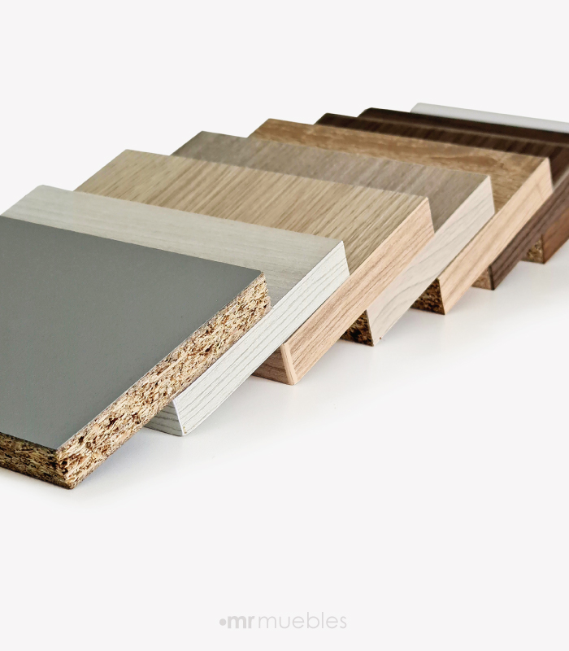
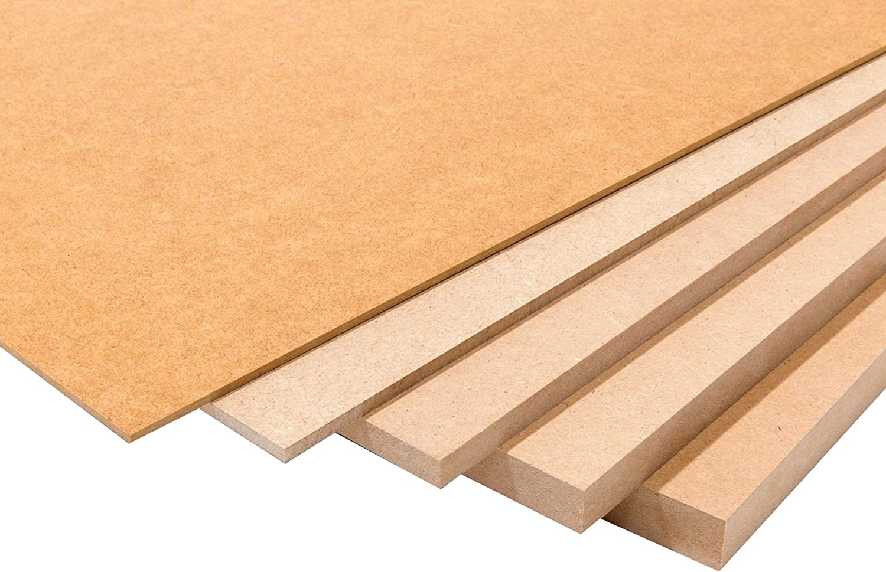

.png)
ESTILO MADERO
Los distintos tipos de materiales
Madera de pino

Descripción
La madera de pino es un material que se extrae del árbol que lleva el mismo nombre. Es una de las más utilizadas hoy en día por su abundancia en la naturaleza, resistencia, ligereza y facilidad a la hora de trabajar con ella.
Melamina
Descripción
La melamina un material plástico fabricado a base de resinas y que se emplea para recubrir tableros de aglomerado o MDF. Se trata de un material sintético duro y resistente al calor, al rayado y a los detergentes y productos de limpieza.
Mdf
Descripción
Es un tablero de fibra de madera conocido mundialmente como MDF. Se destaca por su facilidad para pintar y laquear, a la vez que permite lijar, pegar, cortar, atornillar, perforar . Se utiliza para la fabricación de muebles, revestimientos, paneles divisorios, tabiques, muros, etc.
Madera de abeto

Descripción
Es una madera clara, que puede ser blanca o amarillenta, también muy fácil de trabajar. Ofrece gran resistencia a la humedad, sin resinas y con otras características parecidas al pino, como su buena elasticidad y alta resistencia a los químicos.
Madera de cedro

Descripción
Es de color rojizo, suave, de grano recto y con un olor agradable. Es una madera robusta y con un precio normal. La variedad cedro rojo occidental se usa para muebles de exterior, gracias a su resistencia a los ambientes húmedos.
Madera de nogal

Descripción
Es una de las maderas más duras y resistentes que existen. Color oscuro, tirando a marrón chocolate o incluso morado. Es una madera bastante cara que se utiliza hoy en día para revestimientos de alta calidad en suelos y paredes, para la fabricación de muebles, armarios, puertas, elementos torneados.